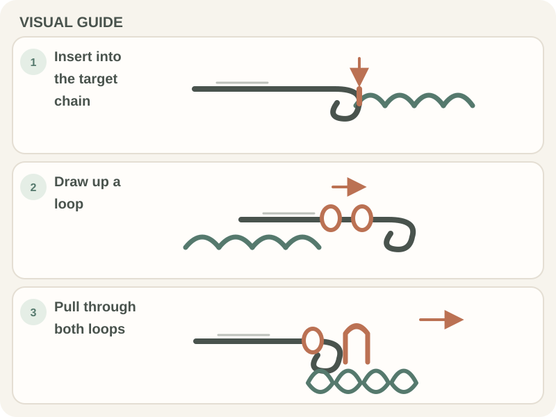

Crochet Basics · Beginner guide
How to Single Crochet: A Step-by-Step Beginner Guide
Learn the four motions of a US single crochet and how to work it into a foundation chain.

Short answer: In US crochet terms, a single crochet is made by inserting the hook into a stitch, drawing up a loop, then pulling yarn through both loops on the hook. The stitch is often abbreviated sc.
Before you begin
Make a foundation chain (a starting row of chain stitches) and keep the active loop—the unfinished loop on the hook. For a common first row of single crochet, chain one more than the number of stitches you want, then work into the second chain from the hook. Follow your pattern if it gives different setup instructions.
A yarn over means catching the working yarn with the hook. After drawing up a loop, you will have two loops on the hook before the final pull-through.
Step-by-step instructions
- Step 1: With the chain’s V’s facing you, insert the hook into the second chain from the hook for the first single crochet. Do not count the active loop as a chain.

Hands use a crochet hook beside a brown crochet swatch. Photo by Pexels contributor via Pexels. - Step 2: Yarn over and pull the hook back through the chain. You now have two loops on the hook.
- Step 3: Yarn over again and draw the hook through both loops. One single crochet is complete, with one active loop left on the hook.
- Step 4: Insert the hook into the next chain and repeat. Work one single crochet in each chain unless the pattern says otherwise.

How to check your work
Look at the top of each stitch: it forms a small V. Each completed single crochet should have one V across the top and one active loop on the hook.
Count the V’s in the row and compare them with the pattern. If you began with one extra chain, that extra chain is the turning chain and is not a single crochet unless the pattern explicitly counts it.
Common beginner problems
- If only one loop is on the hook after drawing up yarn, check that the hook went through the chain and pulled a new loop back through it.
- If the hook is difficult to pull through both loops, loosen the active loops and turn the hook head down as it passes through.
- If your row has too few stitches, you may have skipped the last chain or worked into the wrong chain at the start. Recount before continuing.
Choosing yarn and hook for practice
Use a smooth, light-colored yarn so you can see the chain and the top V of each stitch. Begin with the hook size suggested on the yarn label or pattern.
A small swatch is enough for practice. If the stitches feel difficult to enter, relax your yarn feed before changing hook size.
Practice plan
Work a short row of single crochet, counting each stitch as you finish it. Compare the stitch count with your starting chain and note how your turning chain is treated by the pattern.
If counting the row is new, use the chain and stitch counting guide; for row ends, see how to keep crochet edges straight.
Quick summary
- Insert the hook into the target chain or stitch.
- Yarn over and draw up a loop (two loops on the hook).
- Yarn over and pull through both loops.
Remember: US single crochet is abbreviated sc. Confirm the pattern’s terminology before following UK instructions, where stitch names differ.
Frequently asked questions
How many loops should be on the hook before the last step?
Two. Yarn over and pull through both to finish a US single crochet.
Where do I put the hook for the first row?
A common setup is to chain one more than the desired stitch count and work into the second chain from the hook. Follow your pattern if it specifies another turning-chain setup.
What does sc mean?
In US crochet patterns, sc means single crochet. UK patterns use different names for some stitches, so check the pattern’s terminology note.